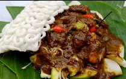
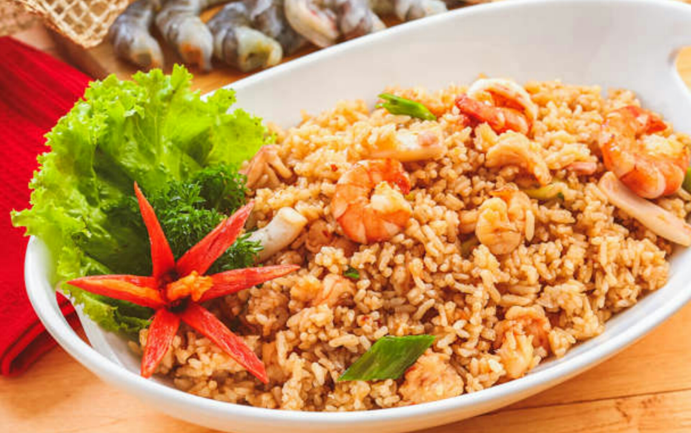
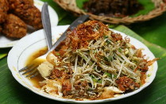
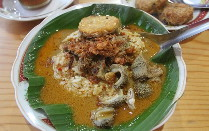

Menu Pilihan
-
 Rujak Cingur merupakan kuliner dari Jawa Timur. Rujak cingur itu terdiri dari potongan buah-buahan yang di beri Cingur (mulut sapi), sayur-sayuran, tahu, dan bumbu rujak cingur yang terdiri dari cabe, petis, gula merah, bawang putih, kacang goreng, di ulek lalu dicampur dengan seporsi rujak cingur yang merupakan kombinasi yang sempurna.
-
 Nasi goreng ialah makanan yang menggunakan bumbu dapur yang dihaluskan, kecap manis, telur, dan sayur. Tak jarang, ada juga beberapa nasi goreng yang diberi lauk tambahan seperti seafood. Nasi goreng seafood ini juga bisa jadi satu pilihan makanan yang mengenyangkan. Rasanya pun pasti sangat enak.
-
 Lontong balap merupakan makanan legendaris dari Jawa Timur.Lotong balap terdiri dari lontong, touge, tahu goreng, lenthok, kecap, bawang goreng, sambal, dan siraman kuahnya yang khas rasanya, asin, manis, gurih, akan lebih nikmat jika dimakan saat hangat.
-
 Nasi Gandul ini adalah makanan khas Pati yang sangat terkenal di Jawa Tengah. Nasi Gandul ini terdiri dari nasi putih, telur, daging sapi, dan kuah santan bumbu kuning.